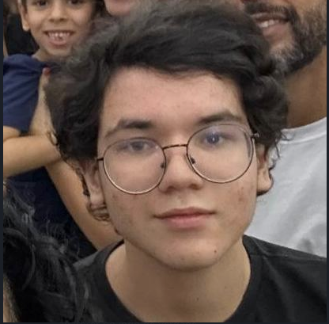

Sobre a FETEC
Contexto
A FETEC é uma feira tecnológica anual que tem como objetivo promover e divulgar projetos inovadores desenvolvidos por alunos. Esse evento é uma plataforma para estudantes apresentarem suas ideias criativas e soluções tecnológicas, incentivando a exploração de novos conhecimentos e a prática de habilidades em um ambiente real. A FETEC não só estimula o aprendizado como também fortalece a cultura de inovação entre os estudantes.
Edições Anteriores
Na edição anterior, a feira contou com a participação do projeto "Cinco Noites no CETEP", um jogo inspirado em Five Nights at Freddy's, adaptado para um ambiente escolar. O projeto destacou-se como um exemplo de inovação e criatividade, demonstrando como a FETEC é um espaço fértil para o surgimento de iniciativas tecnológicas e educativas criadas pelos alunos.
Sobre o Site
Origem da Ideia
O desenvolvimento deste site nasceu com o intuito de aprender e aplicar as linguagens de programação HTML, CSS e Bootstrap de maneira prática e significativa. Ao combinar o aprendizado dessas tecnologias com a apresentação de um jogo, a equipe teve a oportunidade de explorar o desenvolvimento web em um projeto real. Essa abordagem não apenas proporcionou um ambiente para aprendizado, como também resultou em um produto concreto que colabora com a divulgação do jogo "Cinco Noites no CETEP".
Desenvolvedores

O site foi idealizado e desenvolvido por Eduardo dos Santos e Ana Luisa Saraiva, dois entusiastas da programação que trabalharam em conjunto para consolidar seus conhecimentos em design e desenvolvimento web. Ambos uniram forças para criar uma plataforma eficiente e visualmente atraente, reforçando suas habilidades em programação enquanto contribuem para a promoção do jogo. O projeto destaca-se como uma demonstração do potencial de aprendizado colaborativo, incentivando novos desenvolvedores a praticarem suas habilidades em um projeto real.
Tecnologias Utilizadas
Durante o desenvolvimento do site, foram utilizadas as tecnologias HTML, CSS, JavaScript e Bootstrap. Essa combinação de ferramentas e frameworks formou uma base sólida para o layout, funcionalidade e responsividade do site. As tecnologias permitiram criar uma interface moderna e acessível, adequada para a divulgação do jogo e proporcionando uma experiência de usuário agradável.
Intuito
O objetivo principal do site é auxiliar na divulgação do jogo "Cinco Noites no CETEP", ao mesmo tempo que proporciona uma oportunidade de aprendizado para os desenvolvedores. O projeto permite que os criadores aprimorem suas habilidades de programação e design enquanto contribuem para um produto que incentiva a criatividade e o desenvolvimento pessoal.
Sobre o Jogo
História e Contexto
O jogo é inspirado no universo de Five Nights at Freddy’s (FNAF), mas traz uma reinterpretação única: os antagonistas são animatrônicos que representam professores robôs. Essa versão inovadora combina elementos familiares aos fãs de FNAF, com uma nova ambientação em um contexto escolar. O suspense e a tensão características de FNAF permanecem, mas com uma roupagem criativa e adaptada ao ambiente educacional.
Criador
O jogo foi desenvolvido por Pedro Henrique Firmino, que utilizou sua criatividade para adaptar a temática de animatrônicos ao contexto educacional. Sua visão transformou a ideia em um jogo original e cativante, que não apenas homenageia o estilo de FNAF, mas também oferece uma experiência diferenciada aos jogadores.
Desenvolvimento
Utilizando a ferramenta Clickteam Fusion, Pedro Henrique Firmino criou "Cinco Noites no CETEP". Clickteam Fusion é conhecida por permitir a criação de jogos interativos complexos sem exigir grandes conhecimentos de programação. A ferramenta foi essencial para transformar o conceito do jogo em realidade, oferecendo uma plataforma acessível e poderosa para o desenvolvimento de projetos criativos.
GUIA DE SOBREVIVÊNCIA
Se você está lendo isso, significa que acabou de assumir o posto como segurança noturno em um lugar infame por seus “animatrônicos”. Deixe-me te dar um aviso: essas coisas não são só robôs normais. Eles têm uma programação antiga e errada, um comportamento estranho, e se você não for cuidadoso, bem… você pode não sair daqui. Preste atenção em cada detalhe deste guia se quiser sobreviver.
GERENCIE BEM SUA ENERGIA
A primeira coisa que você vai perceber é que a energia não é infinita. Isso quer dizer que você precisa economizar cada gota de eletricidade. Se acabar, todas as portas e luzes desligam, e você ficará completamente exposto. Aí, amigo, é o fim.
MANTENHA A CALMA
Eu sei que isso vai parecer impossível quando você vê essas coisas se aproximando, mas a calma é sua maior arma. O pânico vai te fazer errar, gastar energia à toa e, eventualmente, cometer erros fatais. Respire fundo, siga os padrões que você aprendeu, e não se precipite.
CONHEÇA SEUS PERSEGUIDORES
Para sobreviver, é crucial entender o comportamento único de cada animatrônico. Eles têm padrões próprios, mas são imprevisíveis o suficiente para fazer você baixar a guarda. Aqui está como cada um age e como você pode lidar com eles.
BR3No
Um professor robótico de um modelo atual; Ele possui pupilas especiais, feitas para identificar humanos quando entra em contato visual mútuo com um. Ele tentará periodicamente entrar no Teatro pelo portão frontal; Você deve virar-se para confundir a identificação visual dele, e esperar ele sair para continuar.
jhon
Um professor robótico de um modelo antigo; Ele sofreu danos imensos no corpo inteiro e por isso, a empresa decidiu colocar ele logo atrás de você, que legal. Ele estará desativado pela grande parte da noite, mas você terá que periodicamente ligar a lanterna nele para reiniciar o sistema dele e evitar a morte.
lucas
Um professor robótico de um modelo antigo; Ele tem o temperamento mais curto de todos os professores, e tentará constantemente entrar no Teatro pelas portas; ele possui pupilas escuras, então é difícil saber quando ele estiver nas portas, você deverá utilizar das câmeras para saber da onde ele irá atacar.
SE NÃO DER CERTO...
Se, no fim das contas, tudo falhar — portas não fecham, energia acaba, os animatrônicos estão todos à espreita — feche os olhos e espere. Às vezes, o susto do ataque é menos doloroso do que o terror de vê-los se aproximando. Boa sorte. Se você seguir essas dicas, pode ter uma chance. Se não, bom... eu te vejo do outro lado.